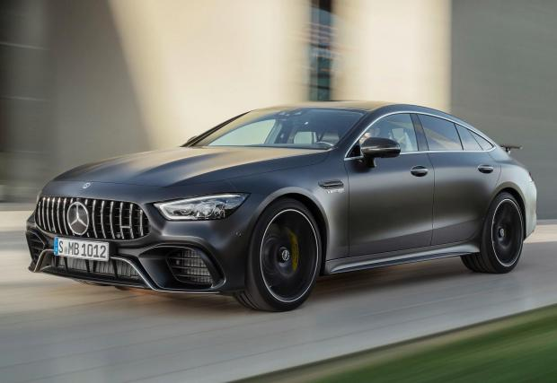
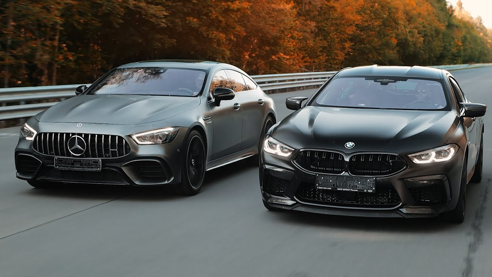

Днес ще Ви запозная с Mercedes AMG GT 63
Mercedes - AMG GT 4-Door Coupé е представителен автомобил, представен през 2018г. от Mercedes-AMG , предлаган
на пазара като вариант с пет врати или спортния автомобил AMG GT с две врати.
Дизайнът на GT 4-Door Coupé е повлиян главно от Mercedes-Benz AMG GT Concept, представен няколко години преди серийното производство. AMG GT 4-Door Coupé използва предно разположение на двигателя със задно задвижване или 4MATIC+, напълно променливо задвижване на четирите колела (задно наклонено) и се предлага или с 3.0L M256 турбо / компресор редови шестцилиндров двигател или 4.0L M177 V8 двигател с двойно турбокомпресор. Редовият шестцилиндров двигател разполага с конвенционален турбокомпресор, както и мека хибридна система, която Mercedes-Benz нарича „EQ Boost“, която използва електрическо задвижван компресор и 48-волтов електрически мотор, които, когато се комбинират, произвеждат допълнителни 21к.с. и 184 lb⋅ft въртящ момент в допълнение към бензиновия двигател, когато не захранва електрическата система.
Единият е обикновен AMG GT 4-Door, а другият е спортния AMG GT 63

Разликите между двете нива на оборудване са както видими, така и не чак толкова лесно забележими
Ето и някои от тях:
Видими:
- Джанти
- Предна и задна броня
- Интериор
Невидими:- Окачване
- Двигател
- Генерация
Ще сравним AMG GT 63 с BMW M8 Gran Coupé
| Конски сили | Нютон метри | Макс. скорост | |
|---|---|---|---|
| Mercedes | 639bhp | 900 | 315km/h |
| BMW | 577bhp | 750 | 250km/h |
За повече информация за модела:
Натиснете тукИзготвил: Георги Цветанов, КН